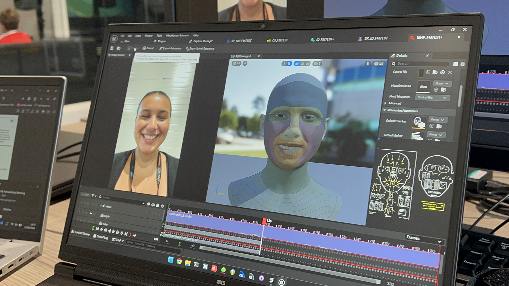
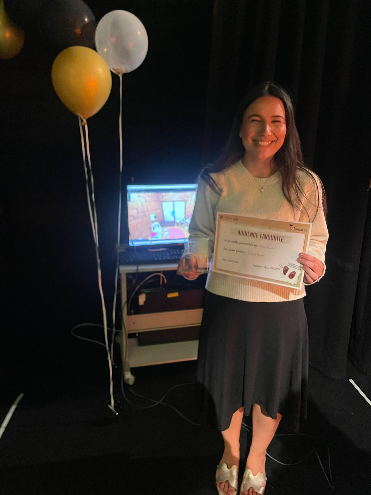
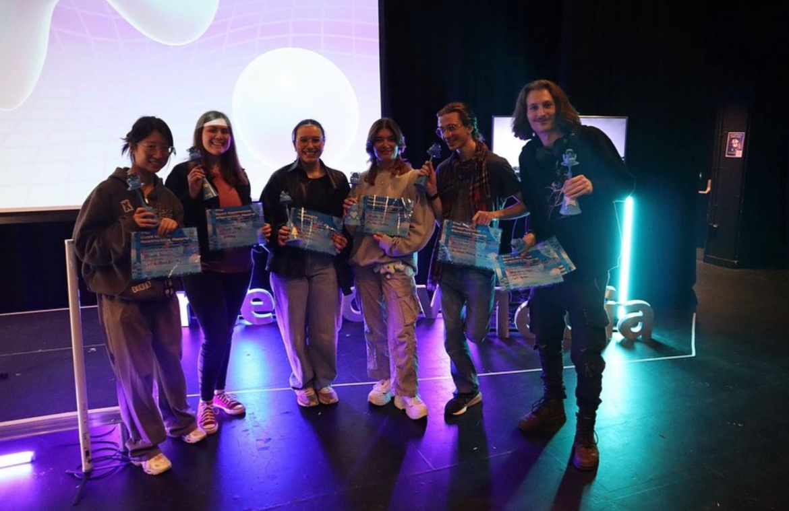
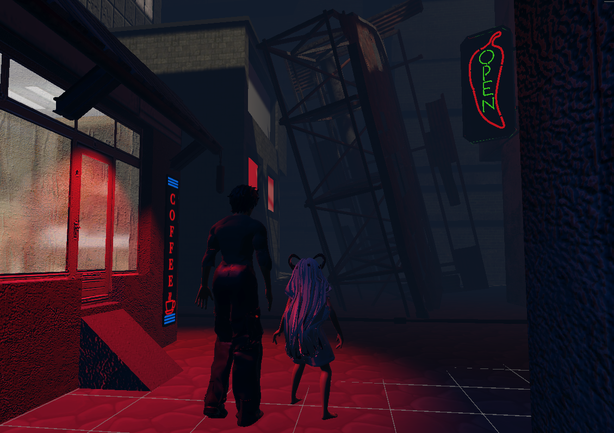

CoSTAR Live Lab – Marine Glum
Managed technical workflows transitioning motion capture data into Unreal Engine for real-time asset animation, while representing the lab on the national CoSTAR Network digital presence working group.
A collection of research, immersive pipelines, and spatial UX deployments.
Managed technical workflows transitioning motion capture data into Unreal Engine for real-time asset animation, while representing the lab on the national CoSTAR Network digital presence working group.

Assisted the Technical Director on active virtual production sets, building optimized 3D environmental assets in Blender and developing pitching collateral for collaborative opportunities with Meta.

Designed and developed an immersive 3D sandbox virtual reality game focusing heavily on user-centric spatial layout, featuring custom 3D low-poly models built in Blender.

Programmed an interactive 2D user-focused maze system utilizing custom sprites, testing native browser interaction and exploring capabilities of the p5.js library.

This project aims to learn from the existing literature on narrative design for video games and shift focus to how players are responding to these design choices. Separated into four main stages, my project held the following structure: Exploring literature, conducting initial user research, project design and development and conclusive user research and evaluation.
